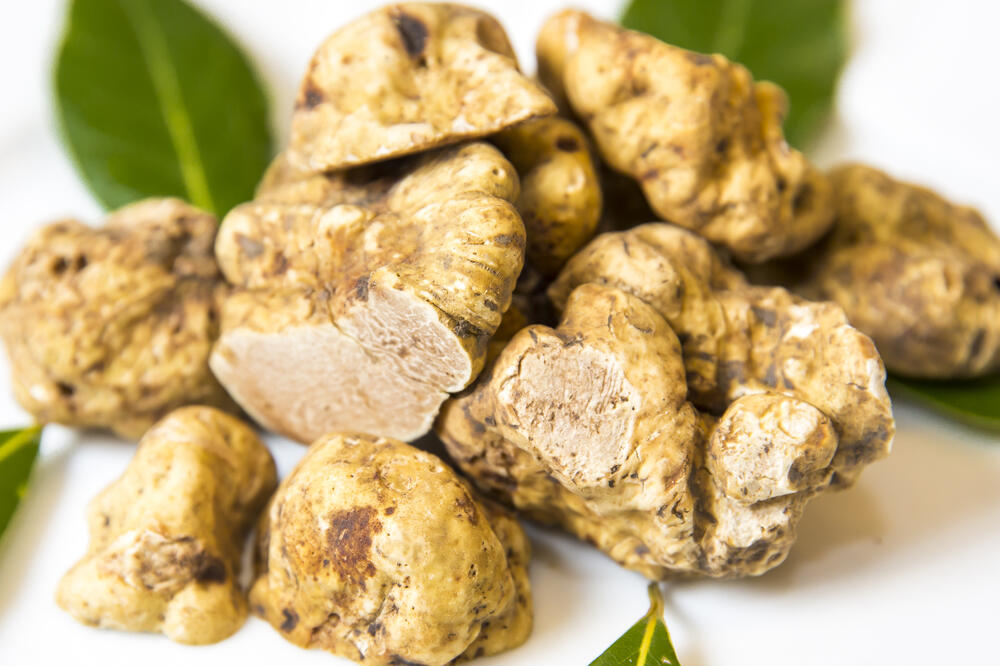
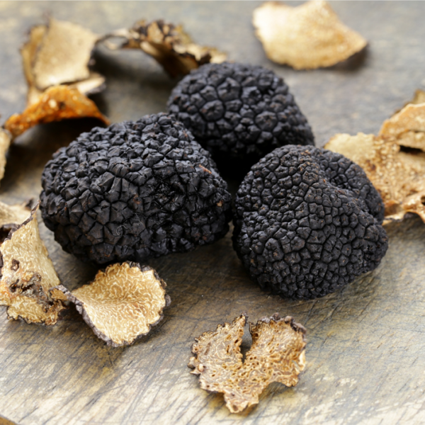

Okus tartufa
Tartufi, iako pripadaju rodu gljiva, ne bismo mogli reći da i okusom tamo pripadaju. Pri konzumaciji, tartuf stvara jedan potpuno drugi učinak u ustima od drugih vrsta gljiva. Faktori koji mogu utjecati na okus tartufa:- korijenje stabla domaćina s kojim tartufi imaju simbiotski odnos
- tlo u kojem rastu
- različita razdoblja kad se pojedina vrsta tartufa sakuplja
- regija u kojoj se tartuf nalazi
Često imaju miris drveta s kojim tvore simbiotski odnos npr. lješnjak ili hrast.

Velik broj ljudi, pri opisivanju crnog tartufa, naglase i njegov miris po morskoj hrani.
Kod crnog tartufa, drvo s kojim tvore simbiotski odnos (posebno lješnjak) ima još snažniji učinak na ukupni dojam, nego kod bijelog tartufa.
Okus crnog tartufa je izraženiji i puno više sličniji okusu samih gljiva.

Iako je neslužbeno pravilo ˝što je tamniji tartuf to je jači okus˝, na svakog ljubitelja tartufa, tartuf ostavlja drugačiji dojam.